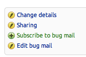
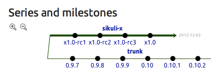

import thread # the threadable find def tfind(parms): global shouldStop end = time.time()+parms.get("waittime", 3) reg = parms.get("region", SCREEN) parms["match"] = None parms["finished"] = False while (not shouldStop) and time.time()<end: if reg.exists(parms["pattern"], 0): parms["match"] = reg.getLastMatch() break parms["finished"] = True # setup a pattern list to be paralleled pats = [] pats.append({"pattern":}) pats.append({"pattern":, "waittime":10}) pats.append({"pattern":}) # start the threads shouldStop = False for p in pats: thread.start_new_thread(tfind, (p,)) #wait for termination end = time.time()+5 while True: if time.time() > end: shouldStop = True print "search stopped" wait(2) break ended = True for p in pats: ended = ended and (p.get("finished", False)) if ended: print "search ended normally" break # check results for p in pats: if p["match"]: p["match"].highlight(1) else: print "not found:", p["pattern"]